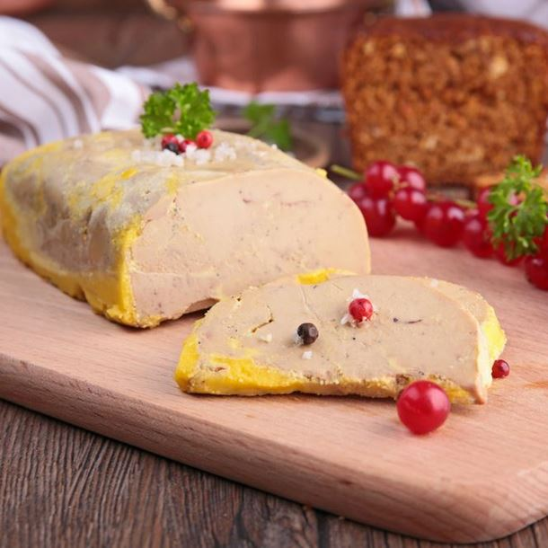

Temps de préparation : 20 minutes
Temps de cuisson : 35 minutes
Ingrédients
- 1 beau foie gras cru
-épices ou alcool au choix
- sel
- poivre
Commençons la Préparation:
Cette recette n'a qu'un but, c'est de désacraliser la préparation du foie gras maison.
En fait, c'est très simple et le foie gras est loin d'être aussi fragile que ce que l'on pense.
Donc voilà trois méthodes pour des pots ou des terrines de 250 g de foie mi-cuit :
Laissez tremper les foies 1 heure ou 2 dans de l'eau tiède salée histoire de les amollir et de sortir le sang.
Ensuite déveinage : au départ j'essayais d'enlever toutes les veines ça me prenait des heures.
Maintenant je fais au plus vite tant pis s'il en reste un peu et ça marche super comme ça.
PS: Si vous faites de la charpie ce n'est absolument pas grave, car tout se reconstitue.
Assaisonnement, au pif exactement comme pour un steak, et finalement je ne vois pas la différence avec avant ou je pesais au gramme près.
Environ 1 toute petite cuillère à café de sel pour un foie et le poivre (fraîchement moulu question de saveur) une bonne pincée.
D'une manière générale mieux vaut pas assez que trop.
Ensuite les épices au choix et/ou l'alcool, par contre là, il faut avoir la main vraiment légère car on a vite fait de dénaturer le goût du foie gras.
Puis je mets dans les pots ou en terrine, je tasse et je laisse mariner ou pas selon que j'ai le temps ou non.
Passons à la cuisson qui est infiniment moins mystérieuse que ce qu'on lit ici ou là
Pour les terrines :
Je fais cuire 35 min à 120°C dans un bain-marie.
Le seul impératif est que l'eau du bain-marie soit déjà bouillante au début de la cuisson et qu'elle soit à la même hauteur que le remplissage de la terrine.
Ensuite je tasse avec un carton entouré d'aluminium et un poids.
Et hop au frigo.
Se conserve 10 jours au frigo.
Pour les conserves (ma méthode préférée) :
Les pots fermés (couvercles ou rondelles neufs) dans la cocotte-minute, séparés par un torchon pour ne pas qu'ils se choquent et se brisent.
12 min à partir du sifflement et c'est fini.
Se garde 6 mois au frigo.
Terrine au MICRO ONDES
Faire chauffer 30 s par tranches de 10 s puissance maxi (900 W).
Quand le gras commence à affleurer à la surface c'est cuit (voire foie gras au micro-ondes du site pour plus de détails).
Par contre, dans tout les cas mieux vaut attendre 3 ou 4 jours avant de déguster car au bout de ce temps le foie est vraiment meilleur.